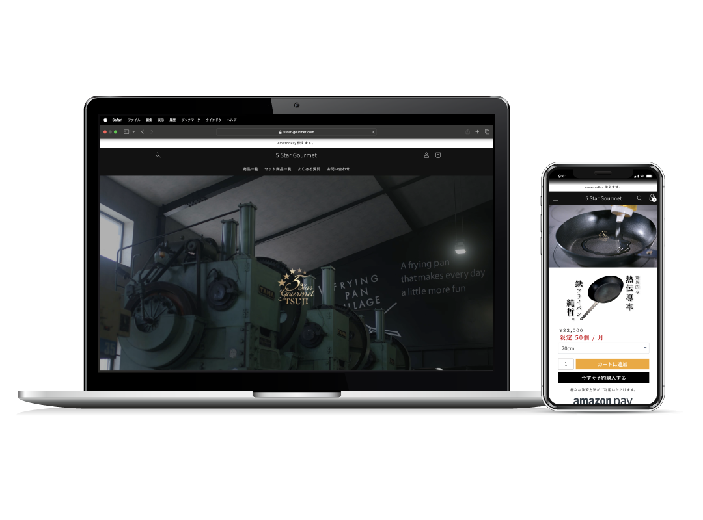
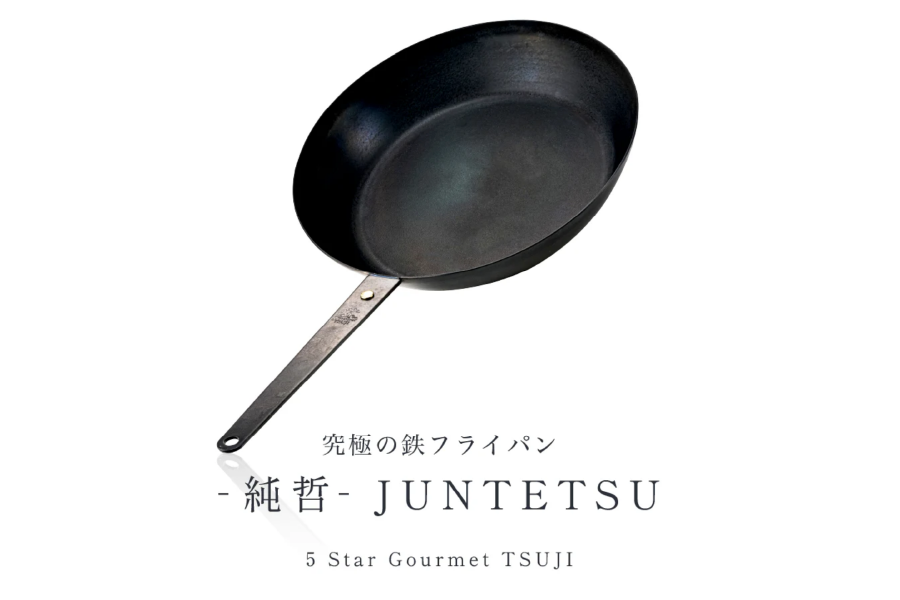
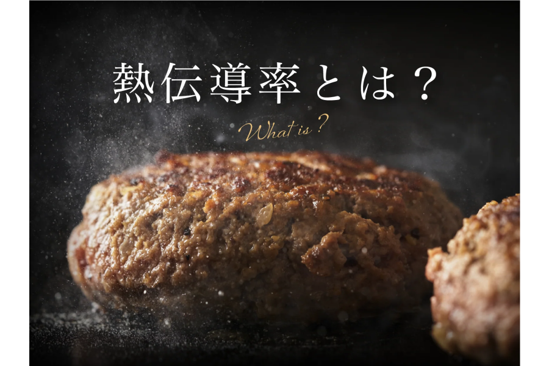
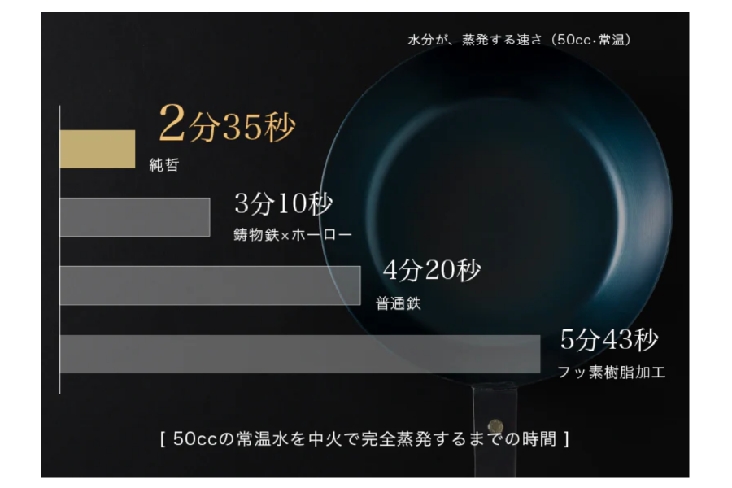

熟練工による手作り鉄フライパン（5 Star Gourmet）｜Shopifyで制作

プロジェクト概要
販売戦略の設計からLP制作・商品撮影、継続的なCVR改善まで一貫支援
「鉄フライパンは重い、錆びる、扱いが難しい」という固定観念を覆し、純鉄フライパンの魅力を伝えるプロジェクト。訴求戦略の設計 → LP制作・商品撮影 → LPO・ギフティングによる継続改善まで一貫して支援しています。
支援内容
Phase 1｜戦略設計
「鉄フライパン=扱いづらい」という固定観念を覆すため、「シーズニング不要」「一生モノ」という訴求軸を設計。ビジュアル主体のストーリー構成と、商品撮影・ギフティングを含む販促シナリオを策定しました。
Phase 2｜制作・構築
戦略に基づき、以下を実装しました。
・料理シーンがイメージできるビジュアル主体のLP設計
・他製品との比較表で差別化ポイントを視覚化
・シズル感のある商品撮影ディレクション
・スマホファーストのUI設計とCTA最適化
Phase 3｜継続的な運用・改善支援
リリース後も以下の運用支援を継続しています。
・LPOによるファーストビュー・CTAのA/BテストとCVR改善
・ヒートマップ分析による離脱・注視ポイントの最適化
・ギフティング施策によるブランド認知向上
・広告運用データに基づくコピー・ビジュアルの調整
デザインギャラリー



担当者コメント
「鉄フライパン=扱いづらい」という固定観念を覆す訴求設計から、LP制作・商品撮影・ギフティングまで一貫して支援。「作って終わり」ではなく、LPOによるA/Bテストやヒートマップ分析を継続し、購買率の向上に伴走しています。